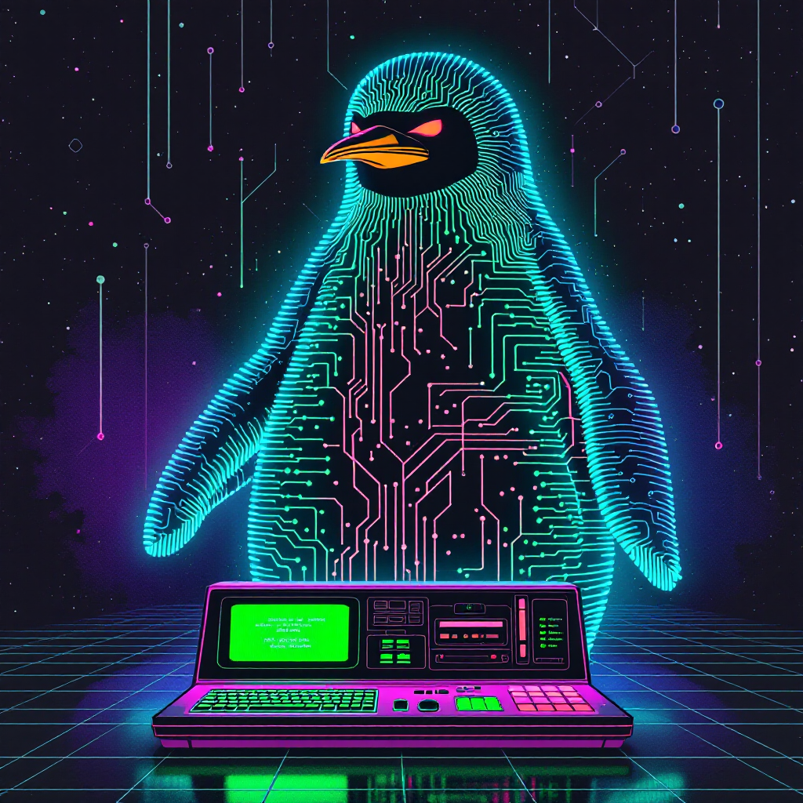

Author’s Note
Hey there! I’m excited to share that I’m on a learning journey with Linux, just like many of you. As I write this series, I’m discovering new commands, exploring different features, and sometimes making mistakes along the way. I believe this makes the content more relatable and practical - we’re learning together!
Each article in this series comes from my hands-on experience, research, and the “aha!” moments I encounter while working with Linux. I’ll share both my successes and the challenges I face, making this a genuine learning experience for all of us.
If you spot something that could be explained better or have suggestions for future topics, please don’t hesitate to leave a comment. Your feedback helps me improve and ensures the content remains valuable for other beginners.
Let’s embrace this learning journey together!
Introduction
Starting your first Linux project might seem daunting, but with the right guidance, you’ll be creating and managing projects like a pro. This comprehensive guide will walk you through everything you need to know about beginning a project in Linux, using simple language and practical examples.
Understanding Linux Project Basics
What is Linux?
Linux is a free, open-source operating system that gives you complete control over your development environment. Think of it as your workshop where you’ll build your projects.
Why Choose Linux for Projects?
- Open-source nature
- Robust command-line interface
- Built-in development tools
- Strong community support
- Cost-effective solution
Setting Up Your Workspace
Directory Organization
project/
├── src/
├── docs/
├── tests/
└── README.mdLet’s understand each component:
src/: This directory holds all your source code filesdocs/: Contains project documentation, guides, and notestests/: Stores test files to verify your code works correctlyREADME.md: The main documentation file that explains your project
Required Tools
- Text editor (like VS Code or Vim)
- Terminal
- Version control system (Git)
- Compiler/interpreter for your programming language
Creating Your First Project
Step-by-Step Guide
Let’s break down each command and understand what it does:
cd ~/Documents
mkdir my_first_project
cd my_first_projectCommand explanation:
cd ~/Documents: Changes directory to Documents folder in your home directorymkdir my_first_project: Creates a new directory for your projectcd my_first_project: Moves into your newly created project directory
Working with Shell Scripts
Understanding the Basic Script Structure
#!/bin/bash
# My first Linux project
TITLE="Hello World Project"
echo "Starting $TITLE..."Let’s analyze each line:
#!/bin/bash: This “shebang” line tells Linux to use the bash interpreter# My first Linux project: A comment explaining the script’s purposeTITLE="Hello World Project": Creates a variable named TITLEecho "Starting $TITLE...": Outputs text using the variable
Variables and Constants
# Variables
project_name="MyProject"
version="1.0"
# Constants
readonly MAX_USERS=100Understanding the code:
- Variables can change during program execution
- Constants (using readonly) remain fixed
- Use meaningful names for better code readability
Advanced Script Examples
System Information Script
#!/bin/bash
TITLE="System Information Report"
CURRENT_TIME=$(date +"%x %r %Z")
TIMESTAMP="Generated $CURRENT_TIME"
cat << EOF
<HTML>
<HEAD>
<TITLE>$TITLE</TITLE>
</HEAD>
<BODY>
<H1>$TITLE</H1>
<P>$TIMESTAMP</P>
<H2>System Details:</H2>
<P>Kernel Version: $(uname -r)</P>
<P>Memory Usage: $(free -h)</P>
</BODY>
</HTML>
EOFThis script demonstrates several important concepts:
- Variable assignment and usage
- Command substitution with
$() - Here document (EOF) for multi-line output
- HTML formatting
- System command integration
Your Turn!
Try creating a simple shell script that displays system information.
Problem: Create a script that shows:
- Current date
- Username
- System hostname
Solution
#!/bin/bash
# System Info Script
echo "Date: $(date)"
echo "User: $USER"
echo "Hostname: $HOSTNAME"Or:
echo -e "Date: $(date)\nUser: $USER\nHostname: $HOSTNAME"Quick Takeaways
- Start with a clear project structure
- Use meaningful names for files and directories
- Document your code
- Implement version control early
- Test frequently
Common FAQs
Q: Do I need programming experience to start a Linux project? A: No, you can start with simple shell scripts and gradually learn more complex programming.
Q: Should I use a text editor or an IDE? A: For beginners, start with a simple text editor like VS Code or Gedit.
Q: How do I know if my project structure is correct? A: Follow standard conventions and organize files logically by function.
Q: What’s the importance of file permissions? A: They control who can read, write, or execute your project files.
Q: Should I back up my project? A: Yes, always use version control (like Git) and keep backups.
Conclusion
Starting a project in Linux doesn’t have to be complicated. Begin with these basics, and you’ll build a strong foundation for future development. Remember to take it step by step and don’t hesitate to consult the community when you need help.
References
Linux - Wikipedia - A comprehensive overview of the Linux operating system, its history, and core concepts.
Linux Project Ideas for Beginners - GeeksforGeeks - A collection of beginner-friendly project ideas to help you practice Linux skills.
Introduction to Linux - freeCodeCamp - An in-depth introduction to Linux fundamentals and basic commands.
History of Linux - Wikipedia - Explore the fascinating evolution of Linux from its inception to present day.
Note: These references were last accessed on February 27, 2025. For the most up-to-date information, please visit the respective websites.
Engage!
Did you find this guide helpful? Share your experience starting your first Linux project in the comments below! Don’t forget to bookmark this page for future reference and share it with other beginners in the Linux community.
Happy Coding! 🚀

You can connect with me at any one of the below:
Telegram Channel here: https://t.me/steveondata
LinkedIn Network here: https://www.linkedin.com/in/spsanderson/
Mastadon Social here: https://mstdn.social/@stevensanderson
RStats Network here: https://rstats.me/@spsanderson
GitHub Network here: https://github.com/spsanderson
Bluesky Network here: https://bsky.app/profile/spsanderson.com
My Book: Extending Excel with Python and R here: https://packt.link/oTyZJ
You.com Referral Link: https://you.com/join/EHSLDTL6